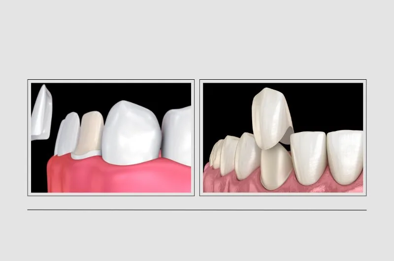

Fațete vs coroaneCare este diferența?Acoperă o parte din dinte.Acoperă întregul dinte.Aveți probleme structurale la dinți, precum carii, fisuri sau fracturi? Aveți nevoie de o restaurare dentară pentru un design ideal al zâmbetului? Pentru orice problemă dentară, este esențial să mergeți fără întârziere la medicul dentist.
Când mergeți la medicul dentist pentru oricare dintre problemele de mai sus, acesta va identifica mai întâi problema și cauza ei, pentru a vă rezolva problemele dentare. Pentru depistarea problemei, medicul folosește posibilitățile tehnologiei actuale de scanare dentară, precum și examinarea intraorală.
Dacă s-a stabilit că soluția pentru problema dinților dumneavoastră este o lucrare de acoperire, veți avea de ales între două opțiuni: fațete sau coroane. Fațetele și coroanele sunt soluții de restaurare dentară care pot îmbunătăți aspectul și funcția dinților. În ce cazuri se aplică fațete și în ce cazuri coroane? Deoarece ambele sunt lucrări de acoperire a dinților, care sunt diferențele dintre ele? Să explicăm mai întâi domeniile de utilizare ale fiecăreia și apoi să le comparăm.
Ce sunt fațetele dentare?
Ce sunt fațetele dentare?
Fațetele sunt învelișuri subțiri, durabile, cu aspect natural și rezistente la colorare, aplicate pe suprafața frontală a dintelui, și sunt folosite pe scară largă pentru a rezolva problemele estetice.
Din ce material sunt făcute fațetele dentare?
Fațetele sunt realizate din mai multe materiale, inclusiv porțelan, rășini compozite și ceramică, pentru a corespunde culorii naturale a dinților.
În ce situații se folosesc fațetele dentare?
Fațetele pot fi preferate pentru a elimina problemele dentare enumerate mai jos.
- Malformații dentare
- Spații între dinți
- Dinți fisurați sau fracturați
- Probleme de aliniere a dinților
- Decolorarea smalțului dentar.
- Probleme estetice.
Care sunt tipurile de fațete dentare?
Fațetele din porțelan:
Fațetele din porțelan sunt rezistente la colorare și la uzură și au o durată de utilizare lungă.
Fațetele din compozit:
Elementul principal este rășina, care se aplică direct pe dinți în straturi, apoi este modelată și lustruită de medicul dentist.
Fațetele din zirconiu
Ceramica din zirconiu se obține prin combinarea dioxidului de zirconiu cu oxigen în cuptoare speciale. Este rezistentă la rupere, fisurare și abraziune.
Fațetele Emax:
Realizate din ceramică din disilicat de litiu, aceste fațete sunt foarte subțiri, translucide și durabile. Ele se cimentează pe suprafața superioară a dinților.
Articol similar:Fațetele E-max: avantaje și dezavantaje?
Fațetele laminate:
Materialul principal este porțelanul. Ele se lipesc pe suprafața frontală a dinților cu o șlefuire minimă a suprafeței dintelui.
Lumineers
Materialul principal al acestor fațete este porțelanul, iar ele sunt realizate special. Fără nicio șlefuire a dintelui, aceste fațete extrem de subțiri se lipesc pe suprafața frontală a dinților.
Fațetele Trial Smile
Aceste fațete sunt foarte subțiri și se lipesc pe structura naturală a dintelui cu o prelucrare minimă.
Fațetele Platel:
Sunt fațete mai puțin răspândite. Se folosesc pentru abraziunile de pe fața posterioară a dinților.
Ce sunt coroanele dentare?
Ce sunt coroanele?
Coroana este un capac așezat peste dinte, de obicei pentru a restaura un dinte deteriorat din diverse motive și pentru a-l proteja după restaurare.
Din ce material sunt făcute coroanele dentare?
Coroanele sunt realizate din metal, rășină și porțelan, porțelan, ceramică, metalo-ceramică, zirconiu, aliaj de aur sau o combinație de porțelan și metal.
În ce situații se folosesc coroanele dentare?
Coroanele dentare pot fi preferate pentru oricare dintre următoarele probleme dentare.
- Repararea fracturilor sau fisurilor dinților
- Pentru refacerea dinților cariați
- Pentru a acoperi și proteja un dinte care a trecut printr-un tratament de canal sau are o obturație mare
- Protejarea și întărirea unui dinte slăbit
- Menținerea la locul ei a unei punți dentare sau a unei proteze
- Redarea aspectului inițial al unui dinte pătat sau decolorat,
- Acoperirea și protejarea implantului dentar
- Probleme estetice.
Care sunt tipurile de coroane dentare?
Coroanele dentare se clasifică în funcție de materialul din care sunt făcute și de procedura care urmează să fie efectuată pe dinte. În general, coroanele se împart în două grupe: coroane cu metal și coroane fără metal. Deoarece coroanele metalice sunt preferate pentru durabilitate și funcționalitate, mai degrabă decât din motive estetice, ele se aplică de obicei pe dinții laterali.
Coroanele metalice:
Tipurile de coroane care conțin metal sunt enumerate mai jos.
- Coroane din aliaj de aur
- Coroane din oțel inoxidabil
- Coroane din aliaj nichel-crom
- Coroane din aliaj cobalt-crom
- Coroane din aliaj de paladiu
Coroanele fără metal:
Coroanele fără metal sunt cele mai potrivite pentru persoanele alergice la metal sau care doresc să păstreze aspectul dinților naturali. Sunt folosite de obicei în scop estetic. Tipurile includ:
- Coroane din porțelan (coroane integral ceramice)
- Coroane din rășină (compozit)
- Coroane din zirconiu
- Coroane din zirconiu placat cu porțelan
- Coroane Emax
Care este diferența dintre fațete și coroane?
În primul rând, trebuie să știți că ambele sunt lucrări de acoperire a dinților. Principalele diferențe dintre ele țin de scopul lor: rezolvarea problemei dinților sau satisfacerea nevoilor estetice. Alte diferențe țin de procedurile care trebuie efectuate pe dinți pentru aplicarea fațetelor și a coroanelor. Mai sus am explicat în ce cazuri se folosesc fațetele și coroanele.
Când mergeți la medicul dentist, acesta va diagnostica problemele dinților, va ține cont de preferințele dumneavoastră, va stabili tratamentul potrivit și apoi va efectua procedurile necesare. Înainte de a lua o decizie, este esențial să cunoașteți diferențele dintre fațete și coroane. Diferențele dintre fațete și coroane sunt prezentate mai jos.
Diferențe în funcție de problemele dentare care trebuie rezolvate:
Dacă aveți probleme structurale ale dinților, precum fracturi sau fisuri, spații între dinți, sau plănuiți o obturație extinsă ori un tratament de canal, coroanele pot fi opțiunea preferată. În aceste situații, trebuie să întăriți dinții, să le refaceți funcționalitatea și să îi protejați. Coroanele sunt mai groase și mai durabile decât fațetele, așa că protejează dinții mai bine. În acest caz, coroanele vor fi cea mai bună alegere.
Dacă aveți probleme superficiale mai mici ale dinților sau doriți un design perfect al zâmbetului prin modificări minore ale dinților din motive estetice, cea mai bună opțiune pentru dumneavoastră vor fi fațetele, care sunt mai subțiri decât coroanele.
Diferențe în funcție de dinții sau de partea dinților care va fi tratată:
Fațetele sunt o opțiune excelentă pentru corectarea micilor anomalii dentare, a fracturilor minuscule, a fisurilor sau a decolorărilor. Puteți alege dintre multe tipuri de fațete pentru a vă îndeplini preferințele estetice. Sunt folosite foarte frecvent pe dinții frontali. Și premolarii pot beneficia de această aplicare. Fațetele se aplică pe fața anterioară a dintelui. Fațetele pot fi aplicate pe mai mulți dinți.
Coroanele, tratamentul preferat pentru problemele dentare mari, învelesc complet și protejează dintele, acoperindu-i întreaga suprafață. Folosirea coroanelor pe dinții laterali este foarte frecventă. Coroanele pot fi aplicate pe unul sau mai mulți dinți.
Diferențe în funcție de procedura care va fi efectuată pe dinți:
Dinții tratați cu fațete sunt în mare parte intacți. Totuși, puteți decide să aplicați fațete pentru a elimina anumite malformații, spații, decolorări etc. sau pentru a vă satisface nevoile estetice. În acest caz, amploarea procedurilor precum șlefuirea și curățarea dinților este mai mică. Pe scurt, folosim în general fațetele pe dinții frontali care necesită o corecție estetică.
Dinții destinați tratamentului cu coroane sunt în cea mai mare parte slăbiți. Pentru pregătirea dintelui pentru coroană pot fi necesare intervenții mai ample. De exemplu, șlefuirea dintelui presupune mai multe proceduri decât în cazul fațetelor. Pentru coroane se poate pregăti un singur dinte sau mai mulți dinți.
Refacerea funcției de masticație poate necesita un tratament al întregii guri. Coroanele sunt folosite pentru a sprijini dinții intacți din zonele cu dinți lipsă atunci când se realizează punți dentare. Coroanele se fixează pe dinții vecini spațiului edentat, oferind suport pentru punte. Dinții artificiali sunt poziționați în locul dinților lipsă, îmbunătățind atât funcția, cât și estetica. Coroanele pot fi fixate fie pe un singur implant, fie pe mai multe implanturi.
Diferențe de durabilitate și durată de viață:
Deoarece fațetele sunt subțiri, riscul de rupere sau fisurare este mai mare, mai ales când mușcați din alimente dure sau la o lovitură puternică în dinte. Fațetele durează de obicei între 7 și 15 ani. Puteți prelungi această perioadă cu o îngrijire dentară corectă.
Datorită structurii mai groase, care învelește complet dintele, coroanele sunt mai durabile decât fațetele și rezistă mai bine la masticație. Coroanele durează de obicei 15–20 de ani sau mai mult. Puteți prelungi această perioadă cu o îngrijire dentară corectă.
Diferențe privind repararea și înlocuirea:
Din cauza structurii lor subțiri, fațetele pot fi greu de reparat atunci când se rup. De cele mai multe ori, îndepărtăm fațeta deteriorată și o înlocuim complet.
Din cauza structurii lor mai groase și mai rezistente, coroanele pot fi mai greu de reparat; totuși, deoarece durează mult timp, este mai puțin probabil să necesite înlocuire sau reparare. Medicul dentist poate fi nevoit să înlocuiască coroanele dacă acestea se deteriorează.
Diferențe de preț:
În funcție de material și de procedură, prețurile ambelor pot varia. În general, fațetele sunt mai scumpe decât coroanele. Este important să vă consultați cu un medic dentist pentru a stabili opțiunea cea mai potrivită, deoarece prețurile variază în funcție de procedurile care vor fi efectuate pe dinți, de tipul de fațetă aplicat și de materialul folosit.
Fațete vs. coroane: întrebări frecvente
Ce sunt mai avantajoase, fațetele sau coroanele?
Avantajele fiecăreia depind de lucrarea aplicată pe dinți, de scopul ei și de procedurile necesare.
Șlefuirea minimă, care păstrează structura naturală a dinților la aplicarea fațetelor, este un mare avantaj pentru cei care doresc un tratament dentar estetic.
Deși modifică semnificativ structura naturală a dintelui, coroanele sunt o soluție de lungă durată care protejează și întărește dintele, satisfăcându-i atât nevoile estetice, cât și pe cele funcționale.
Au fațetele dezavantaje?
Aplicarea fațetelor necesită îndepărtarea unei părți din smalțul dentar, ceea ce poate duce la o sensibilitate crescută temporară a dintelui tratat la alimentele și băuturile calde și reci. Dinții cu fațete pot fi predispuși la carii. Când un dinte cu fațetă se deteriorează, pot fi necesare intervenții și tratamente dentare suplimentare.
Au coroanele dezavantaje?
Înainte de aplicarea coroanei, dintele trece de obicei printr-un tratament amplu și ireversibil. Coroanele se pot fisura uneori. În timp ce fisurile mici pot fi reparate fără îndepărtarea coroanei, fracturile mai mari sau multiple pot necesita înlocuirea completă a coroanei. Unele persoane au reacții alergice la porțelan sau la metalele din coroane.
Sunt potrivite pentru dumneavoastră fațetele sau coroanele?
Puteți folosi informațiile de mai sus pentru a decide dacă fațetele sau coroanele sunt potrivite pentru dumneavoastră. Starea dintelui și procedura planificată vor determina decizia. Este important să luați decizia urmând sfatul medicului dentist.
Ce arată mai natural, coroanele sau fațetele?
Fațetele oferă un zâmbet cu aspect mai natural, în timp ce coroanele ajută la îmbunătățirea aspectului dinților și îi fac mai puternici.
Pentru ce dinți nu sunt recomandate fațetele?
Fațetele nu sunt recomandate pentru dinții laterali sau pentru dinții supuși unor forțe de masticație intense.
În ce situație nu sunt recomandate fațetele?
Medicii dentiști pot să nu recomande fațete persoanelor cu gingii nesănătoase sau care își scrâșnesc dinții.
Pentru estetica dentară se folosesc doar fațete? Se folosesc și coroane?
Nu, fațetele nu sunt singurul tratament pentru estetica dentară. Există multe metode și opțiuni de tratament diferite pentru obținerea esteticii dentare. În funcție de starea dinților, de așteptările pacientului și de obiectivele estetice, pot fi preferate diferite metode de tratament. Și coroanele pot fi folosite pentru estetica dentară.